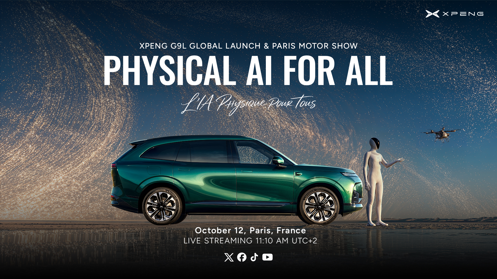
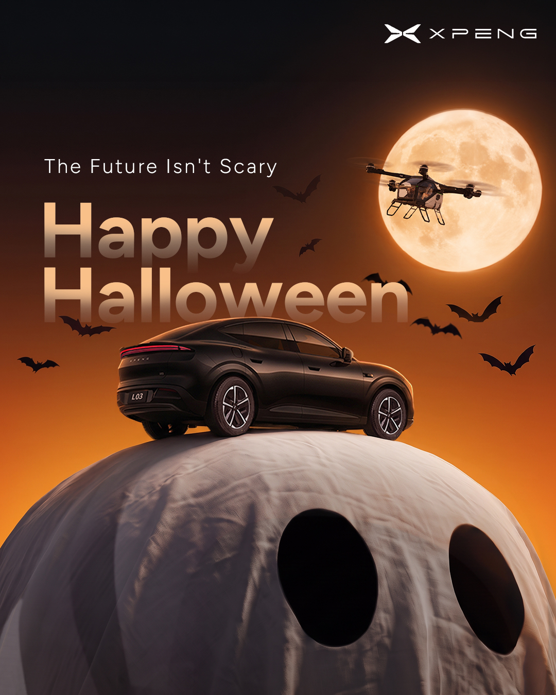
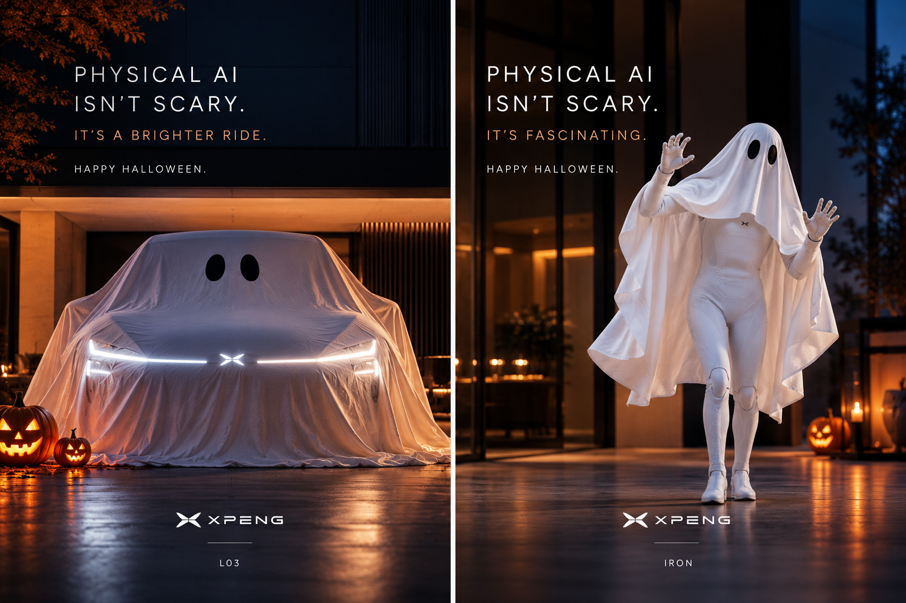

林程斌 / 内容创意作品
1. 巴黎车展直播传播
围绕巴黎之夜、G9L 全球发布与巴黎车展，面向海外用户组织直播传播，让发布会现场成为品牌与用户共同参与的内容事件。
内容思路：以“Physical AI for All”为传播主线，用直播呈现新车与未来科技，再通过回放和车展回顾延续发布会内容，让无法实时观看的用户也能了解发布重点。
我的具体工作：负责海外社媒直播传播与回放内容发布，衔接预热、直播和后续内容，完成跨平台传播与效果复盘。
15 分钟直播覆盖 Facebook、X、TikTok、YouTube 四个平台。直播阶段 0 投放，直播及后续回放帖累计曝光／播放约 7,606 万次，其中 Facebook 约 2,881 万次。

直播原帖：
https://x.com/XPENG_Global/status/2109644950011031862
车展回顾原帖：
https://x.com/XPENG_Global/status/2110279440211104060
2. 万圣节系列创意海报
围绕万圣节，为汽车、机器人与飞行汽车设计同一主题下的系列品牌内容。
内容思路：以“The Future Isn’t Scary”“Physical AI Isn’t Scary”为主题，借幽灵装扮讲一个未来科技的节日玩笑：让 L03 停在巨型幽灵上，让汽车与机器人披上白布，把科技的陌生感转化为轻松、有趣的画面。
我的具体工作：负责主题策划、画面创意与英文文案，确定幽灵装扮、圆月、飞行汽车等元素的组合，让不同产品围绕同一主题展开。


3. AI 创意视频
P7+ 空间魔法
以 P7+ 后备箱空间为出发点，把产品卖点变成一场短视频里的视觉魔法。
内容思路：结合春节返乡和准备年货的场景，让礼盒、行李与年货从后备箱展开，用一次连续变化表现“装得下”，让用户先看到故事，再理解空间卖点。
我的具体工作：提出创意概念，设计后备箱开启、物件展开与最终定格的画面脚本，完成生成要求、素材筛选与成片组合。
冬季材质创意系列
从冬季生活经验出发，设计“给汽车穿衣服”和“毛绒车去滑雪”两种内容表达。
内容思路：针织换装让毛线落下并沿车身铺开，形成完整的针织外衣；毛绒雪场则让汽车变成软绒玩具，在冰雪中运动。同一季节主题通过材质和动作发展成不同故事。
我的具体工作：负责创意构思、动作拆解与画面制作，在保留车辆轮廓的基础上调整材质、环境和镜头运动，完成片段筛选与成片组合。
积木世界系列
将汽车放进完整的玩具世界，用统一风格延展两条短片。
内容思路：把汽车、道路与城市一同转化为积木，分别设计地面追拍和城市飞行：一条穿过彩虹与城堡，一条从高楼间飞出，用镜头运动带出场景里的想象力。
我的具体工作：负责风格方向、场景设定与镜头设计，完成生成画面的调整、筛选和两条短片制作。
机器人圣诞短片
把科技角色带入熟悉的圣诞生活场景。
内容思路：让机器人穿上红色节日服装，在圣诞树与壁炉旁跳舞，通过动作和环境的反差，呈现科技角色轻松、亲近的一面。
我的具体工作：负责节日场景与动作设计，完成画面生成、片段选择和后期组合。
4. KOC 内容策划与混剪
围绕体验反馈、本地化事件和产品上市，为 KOC 提供不同内容角度的短视频，兼顾选题与多版本交付。
内容思路：同一批素材先确定观看入口，再组织内容：澳媒 NGP 从真实道路和人物反馈切入；马来西亚以本地生产事件连接产品与当地用户；哥伦比亚用不同英文首屏吸引用户进入同一上市故事。
我的具体工作：负责素材选择、内容结构与英文开场设计，组合镜头、图片和音乐，完成批量制作、成片检查和素材交付。
澳媒 NGP 单批输出 100 条；马来西亚主题 30 条；哥伦比亚上市形成 6 条英文开场变体。
澳媒 NGP 体验
从真实道路与人物反馈中提炼内容，围绕驾驶体验组织镜头。
https://bebopooo.github.io/lin-chengbin-portfolio/assets/koc/australia-001-review-720p.mp4
https://bebopooo.github.io/lin-chengbin-portfolio/assets/koc/australia-050-review-720p.mp4
https://bebopooo.github.io/lin-chengbin-portfolio/assets/koc/australia-100-review-720p.mp4
马来西亚本地化生产
将工厂图片与市场信息组织成短视频，以本地生产事件连接产品与当地用户。
哥伦比亚上市
以“China AI EV”“Tesla, Watch This”等英文首屏，为同一上市事件设计不同观看入口。